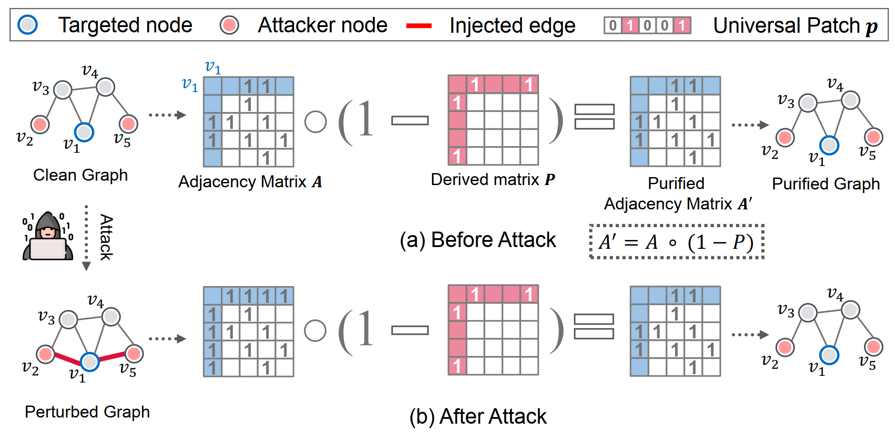
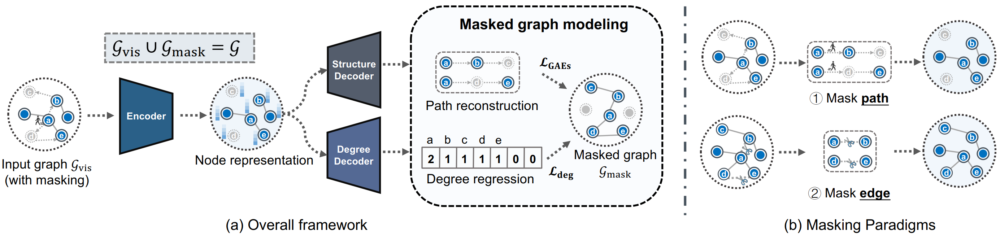
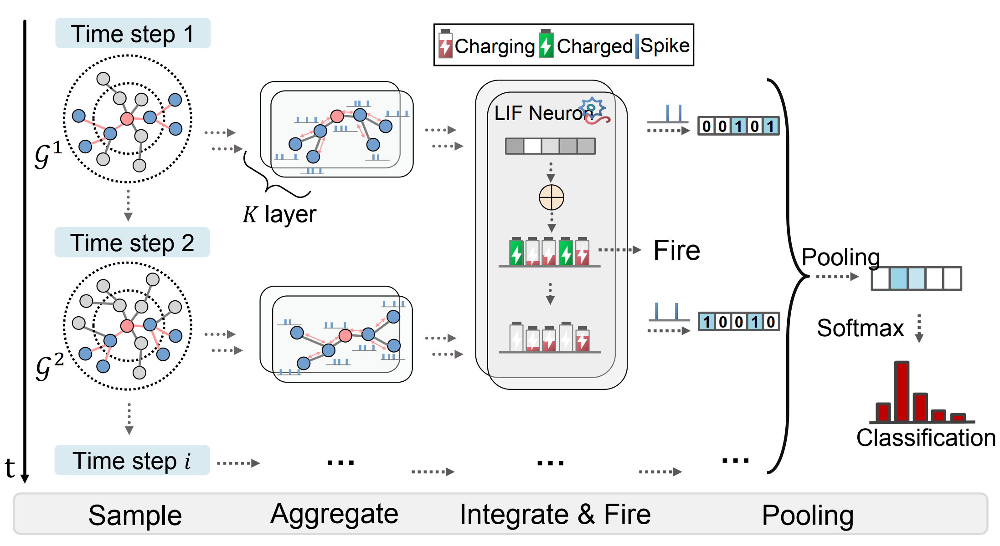
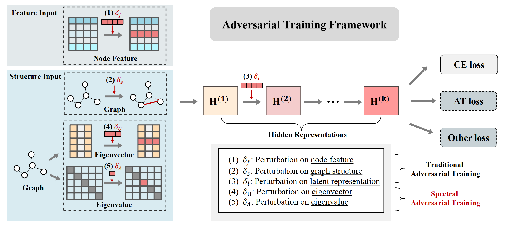
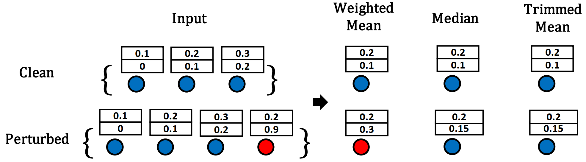
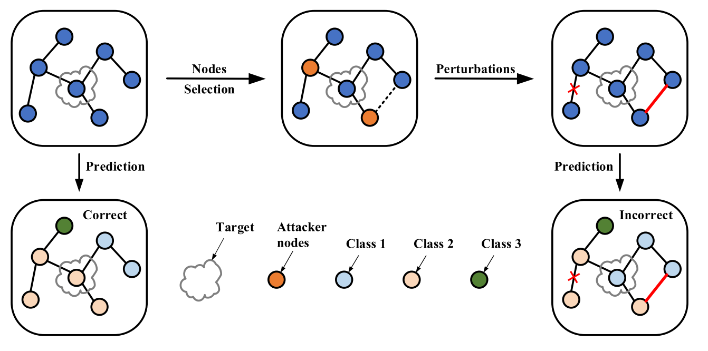

Jintang Li's Homepage
 |
Jintang Li (李金膛 in Chinese) School of Software Engineering E-mail: lijt55 [AT] mail2.sysu.edu.cn |
About me
I am currently a Ph.D student at Sun Yat-sen University, where I am advised by Prof. Liang Chen. I received the master's degree from Sun Yat-sen University in 2021.
My research interests include:
Trustworthy Graph Learning: reliability, fairness, etc.
Graph Neural Networks
Spiking Neural Networks
I am always open for collaborations and if you are interested in my research feel free to contact me via email or WeChat (id: EdisonLeejt).
PyTorch Geometric
As a core maintainer of PyTorch Geometric (PyG), I can provide assistance with any issues you may encounter while using PyG. Feel free to reach out to me for support or guidance in working with PyG. |
Educations
Sun Yat-sen University Ph.D in Software Engineering, from August 2021 to June 2025 (Expected).
Sun Yat-sen University M.S. in Electronics and Communications Engineering, from August 2019 to June 2021.
Experiences
Research Intern in Ant Group, from February 2022 to June 2022.
Research Intern in Ant Group, from July 2023 to present.
Recent news
October 24, 2023: I was invited as the reviewer for WWW 2024.
[arXiv 2023] November 29, 2023: We have released our position paper on temporal graph learning: LasTGL: An Industrial Framework for Large-Scale Temporal Graph Learning
[WSDM 2024] October 20, 2023: Two papers accepted to WSDM 2024!
[arXiv 2023] October 19, 2023: Check out our new preprint on Heterophilic Heterogeneous graphs.
September 3, 2023: I was invited as the reviewer for LoG 2023.
[ICDM 2023] September 3, 2023: our works on Enhancing Graph Collaborative Filtering via Neighborhood Structure Embedding has been accepted by ICDM 2023!
[CIKM 2023] August 5, 2023: our works on (1) defending graph convolutional networks against adversarial attacks with universal defenses and (2) improving graph representation learning on long-tail distributions have been accepted by CIKM 2023!
[KDD 2023] May 18, 2023: our work on understanding masked graph modeling for graph autoencoders has been accepted by KDD 2023!
[IJCAI 2023] April 20, 2023: our collaboration with Ant Group on Semi-Supervised Anomaly Detection has been accepted by IJCAI 2023!
[AAAI 2023] November 19, 2022: our work on the use of spiking neural networks to scale up dynamic graph representation learning has been accepted by AAAI 2023 Oral!
[TKDE 2022] November 4, 2022: our work on robust graph neural networks has been accepted by TKDE!
[PyG Team] September 23, 2022. I've joined the PyG Team!
[KDD 2022] June 11, 2022: We will give a tutorial about Trustworthy Graph Learning: Reliability, Explainability, and Privacy Protection with our collaborators.
[IJCAI 2022] April 21, 2022: our work on spiking graph convolutional networks has been accepted for a Long Oral presentation.
Selected Publications
Note: * for corresponding author, # for equal contribution.
Please find my full list of publications in the following Link.
Conferences and Journals
|  | GUARD: Graph Universal Adversarial Defense |
|  | What's Behind the Mask: Understanding Masked Graph Modeling for Graph Autoencoders |
|  | Scaling Up Dynamic Graph Representation Learning via Spiking Neural Networks |
 |
Spiking Graph Convolutional Networks |
|  | Spectral Adversarial Training for Robust Graph Neural Network |
|  | Understanding Structural Vulnerability in Graph Convolutional Networks |
 |
GraphGallery: A Platform for Fast Benchmarking and Easy Development of Graph Neural Networks Based Intelligent Software |
|  | Adversarial Attack on Large Scale Graph |
Preprints
LasTGL: An Industrial Framework for Large-Scale Temporal Graph Learning
Jintang Li, Jiawang Dan, Ruofan Wu, Jing Zhou, Sheng Tian, Yunfei Liu, Baokun Wang, Changhua Meng, Weiqiang Wang, Yuchang Zhu, Liang Chen*, Zibin Zheng.
arXiv, 2023.
[pdf]Hetero$^2$Net: Heterophily-aware Representation Learning on Heterogenerous Graphs
Jintang Li, Zheng Wei, Jiawang Dan, Jing Zhou, Yuchang Zhu, Ruofan Wu, Baokun Wang, Zhang Zhen, Changhua Meng, Hong Jin, Zibin Zheng, Liang Chen*.
arXiv, 2023.
[pdf] [code]Scaling Up, Scaling Deep: Blockwise Graph Contrastive Learning
Jintang Li, Wangbin Sun, Ruofan Wu, Yuchang Zhu, Liang Chen*, Zibin Zheng.
arXiv, 2023.
[pdf] [code]A Graph is Worth 1-bit Spikes: When Graph Contrastive Learning Meets Spiking Neural Networks
Jintang Li, Huizhe Zhang, Ruofan Wu, Zulun Zhu, Liang Chen*, Zibin Zheng, Baokun Wang, Changhua Meng.
arXiv, 2023.
[pdf] [code]Less Can Be More: Unsupervised Graph Pruning for Large-scale Dynamic Graphs
Jintang Li#, Sheng Tian#, Ruofan Wu, Liang Zhu, Wenlong Zhao, Changhua Meng, Liang Chen*, Zibin Zheng, Hongzhi Yin.
arXiv, 2023.
[pdf] [code]A Survey of Trustworthy Graph Learning: Reliability, Explainability, and Privacy Protection
Bingzhe Wu, Jintang Li, Junchi Yu, Yatao Bian, Hengtong Zhang, CHaochao Chen, Chengbin Hou, Guoji Fu, Liang Chen*, Tingyang Xu, Yu Rong, Xiaolin Zheng, Junzhou Huang, Ran He, Baoyuan Wu, GUangyu Sun, Peng Cui, Zibin Zheng, Zhe Liu, Peilin Zhao.
arXiv, 2022.
[pdf]Recent Advances in Reliable Deep Graph Learning: Inherent Noise, Distribution Shift, and Adversarial Attack
Jintang Li, Bingzhe Wu*, Chengbin Hou, Guoji Fu, Yatao Bian, Liang Chen, Junzhou Huang.
arXiv, 2022.
[pdf]A Survey of Adversarial Learning on Graphs
Liang Chen*, Jintang Li, Jiaying Peng, Tao Xie, Zengxu Cao, Kun Xu, Xiangnan He, Zibin Zheng.
arXiv, 2020.
[pdf] [paper list]
Projects
PyTorch Geometric (collaborator): Graph Neural Network Library for PyTorch.
GraphGallery: A gallery for benchmarking Graph Neural Networks (GNNs).
GreatX: A graph reliability toolbox based on PyTorch and PyTorch Geometric.
Mooon: A graph data augmentation library based on PyTorch and PyTorch Geometric.
Awesome Graph Adversarial Learning: A curated collection of adversarial attack and defense on graph data.
Awesome Fair Graph Learning: Paper Lists for Fair Graph Learning (FairGL).
Awesome Masked Autoencoders: A collection of literature after or concurrent with Masked Autoencoder (MAE).
Rewards
I am interested in participating in AI competitions and would love to collaborate with others! Please feel free to reach out to me if you are also interested in such collaborations.
iFLYTEK AI development competition 2023 [Link], üèÜ1st place.
iFLYTEK AI development competition 2023 [Link], ü•à2nd place.
Ant Group ATEC 2022 [Link], ü•à2nd place.
Baidu AI Competition 2023: CVR Prediction. [Link], ü•à2nd place.
CAAI-BDSC 2023, Dynamic Link Prediction In Social Knowledge Graphs. [Link], ü•â3rd place.
Ant Group Green Computing Contest. [Link], ü•à2nd place.
CIKM 2022 AnalytiCup Competition: Federated Hetero-Task Learning. [Link [Code], üèÖ4th place.
ICDM 2022 Competition: Risk Commodities Detection on Large-Scale E-Commence Graphs. [Link] [Code], ü•â3rd place.
FinvCup 2022: Fraud User Risk Identification. [Link], [Code], üèÖ9th place.
Ant Group ATEC 2021: truthworthy AI. [Link], ü•à2nd place.
Ant Group ATEC 2021 online, Track 2: Fraud detection of digital currency transactions. [Link], üèÖ4th place.
Spectra Review Paper Competition 2022 (Spring) üèÜwinner. [Link].
Spectra Review Paper Competition 2021. [Link], ü•â3rd place winner with [Introduction on Graph Adversarial Learning].
KDD Cup 2020, Adversarial Attacks and Defense on Academic Graph. [Link], ü•à2nd place.
Talks
KDD 2022 tutorial: Trustworthy Graph Learning: Reliability, Explainability, and Privacy Protection.
AI TIME IJCAI 2021: Understanding Structural Vulnerability in Graph Convolutional Networks (in Chinese).
Scholarship
National Scholarship: 2022 & 2023 in Sun Yat-sen University (Top 1%)
Professional services
Reviewer: AAAI, IJCAI, WWW, KDD, LoG, TKDD, JMLR, etc.
Useful Links
Deadlines: ccf-ddl
CCF list: ccf.atom.im